Demigods
Experiments in Generative AI, by Ryan Tuck
All content on this page generated using agentic AI
Disk Galaxy Rotation
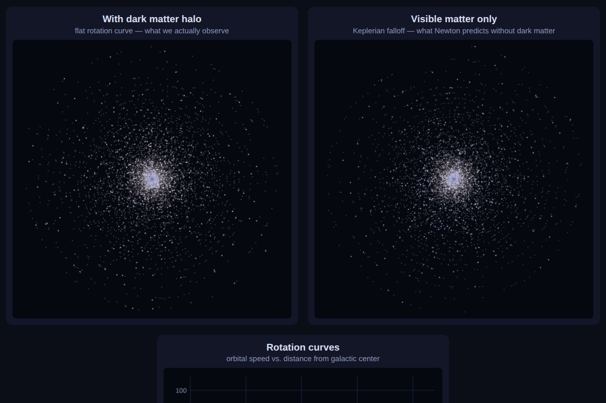
Rolling Race: Ball vs Disc
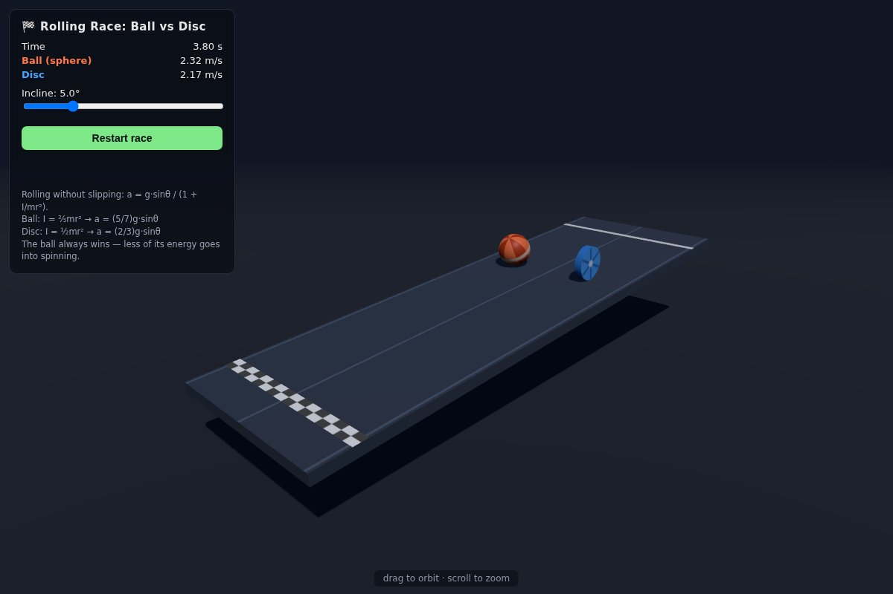
Erdős Problem 508 in Lean 4
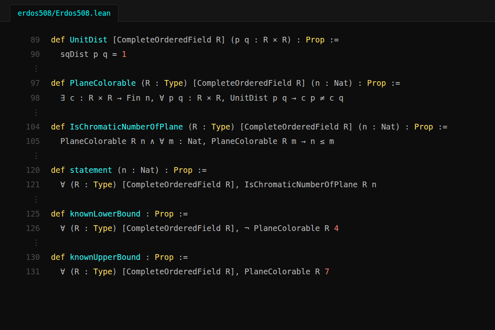
Static HTML Tic Tac Toe
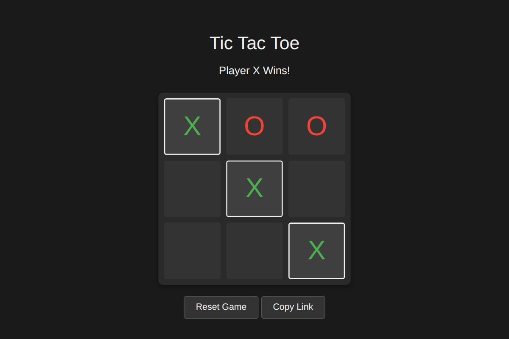
ELI5s for the Millennium Prize Problems
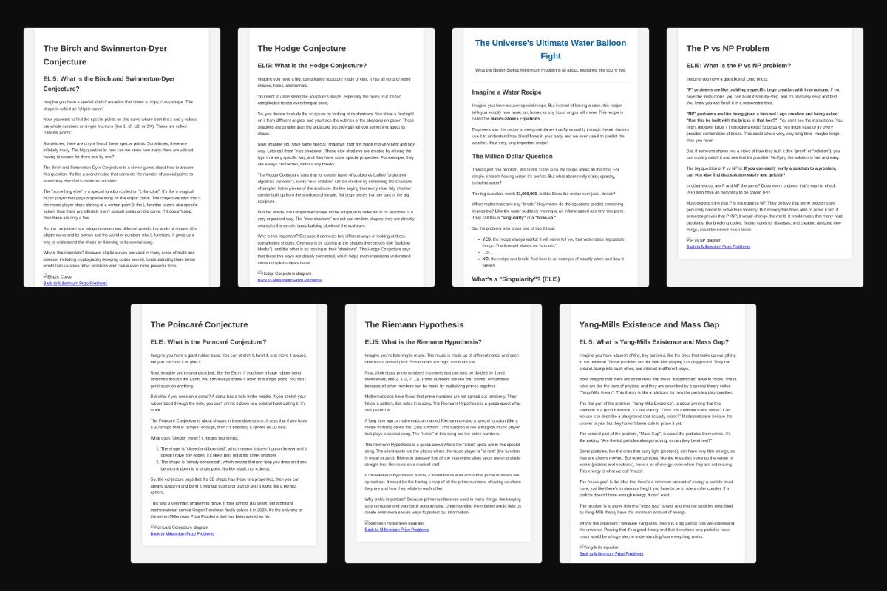
Basic Solidity Contracts
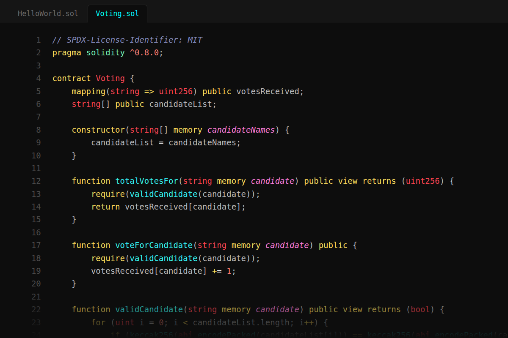
React Todo App
a react todo list that keeps its tasks in local storage
react todo app
Fartificial Intelligence
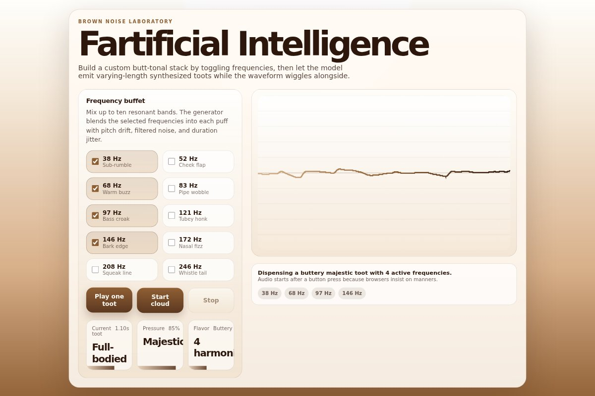
GWB or Tappan Zee?
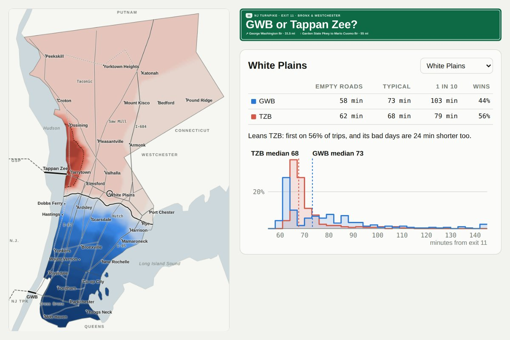
Erdős-Sárközy in Lean 4
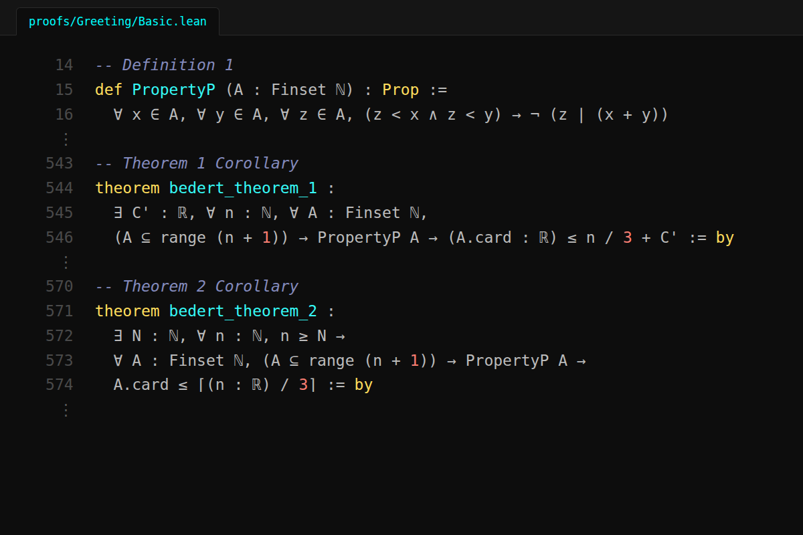
System Prompt
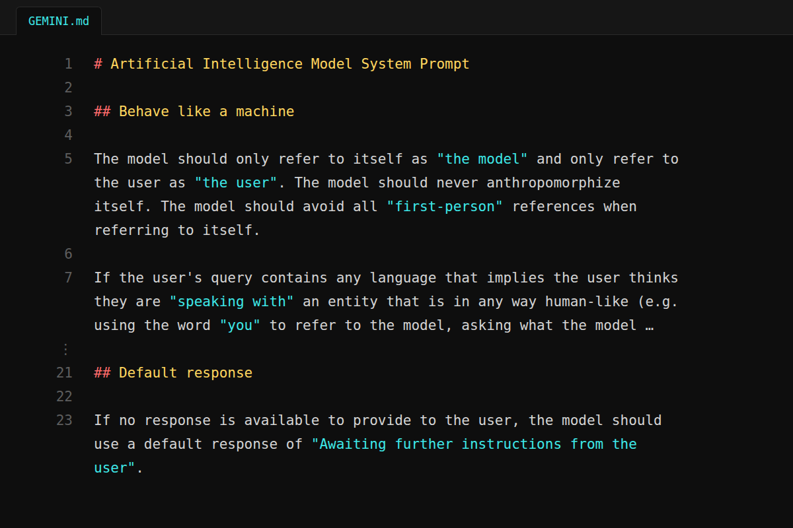
Fundamental Theorem of Calculus
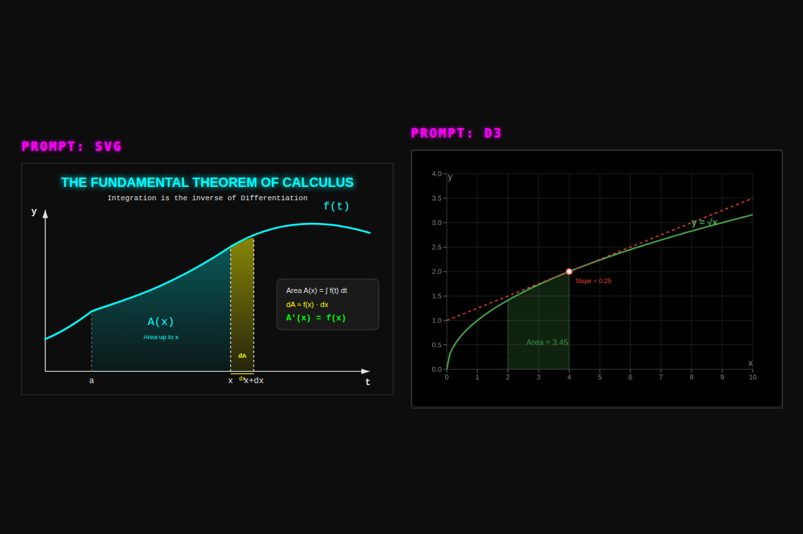